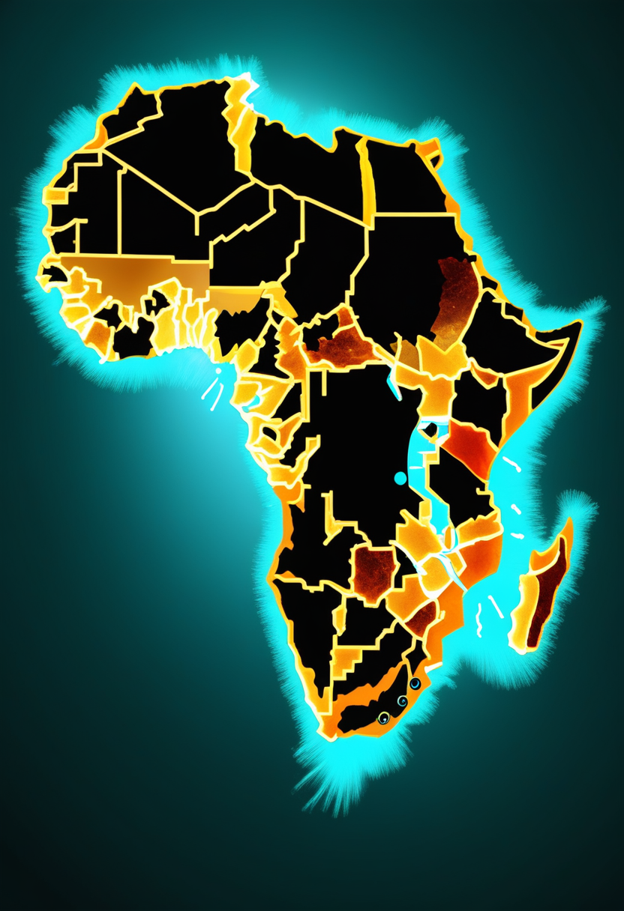
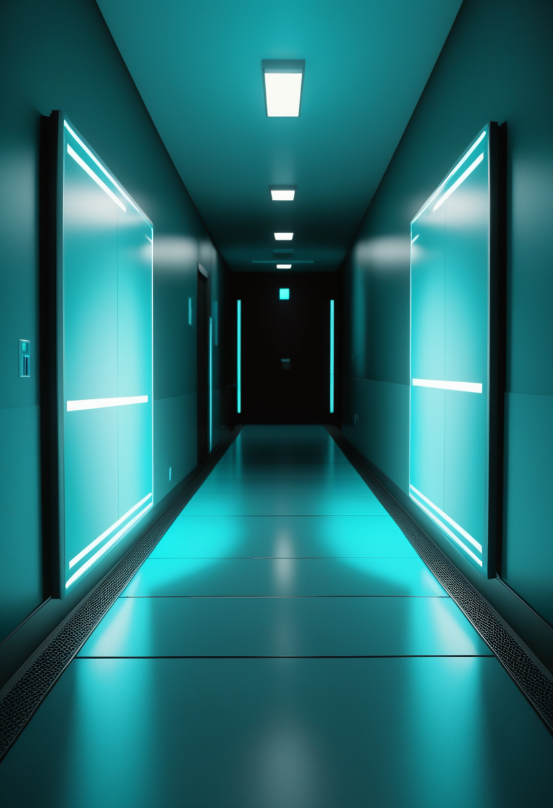
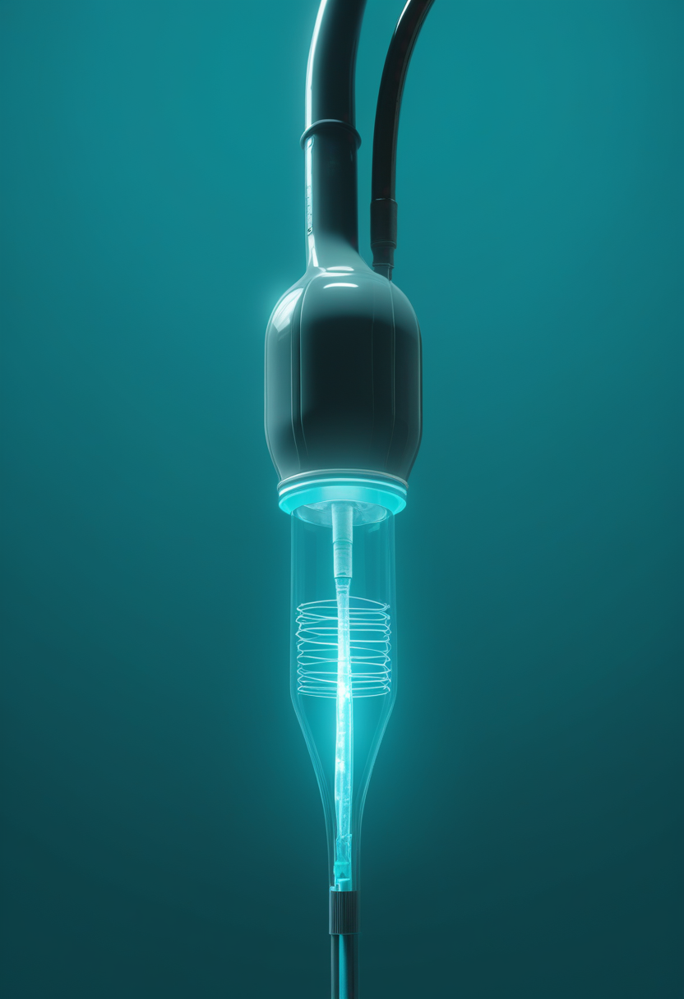
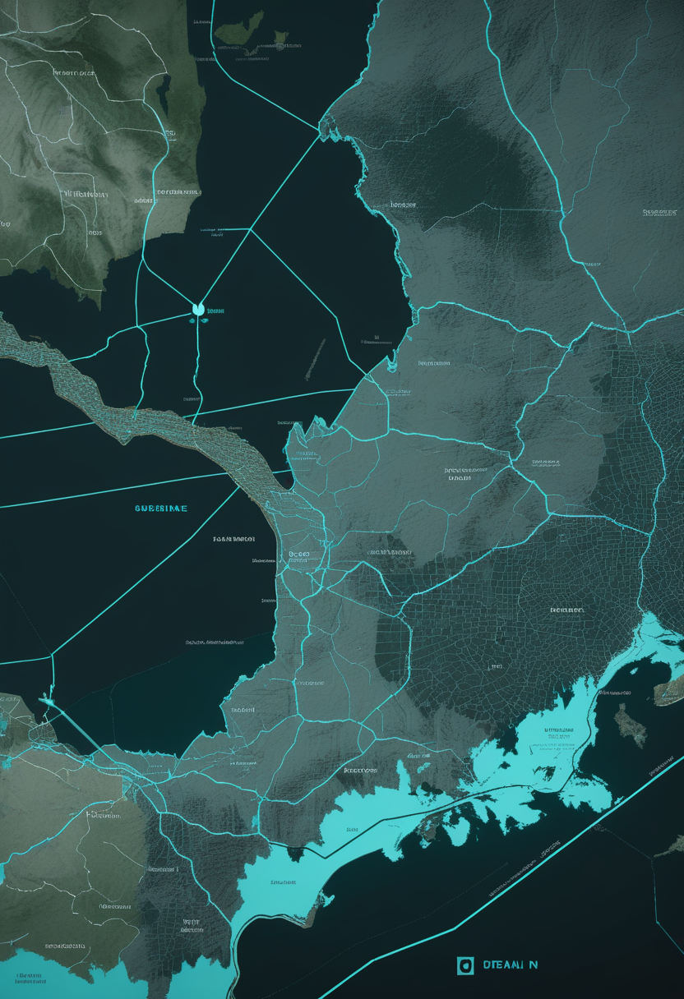
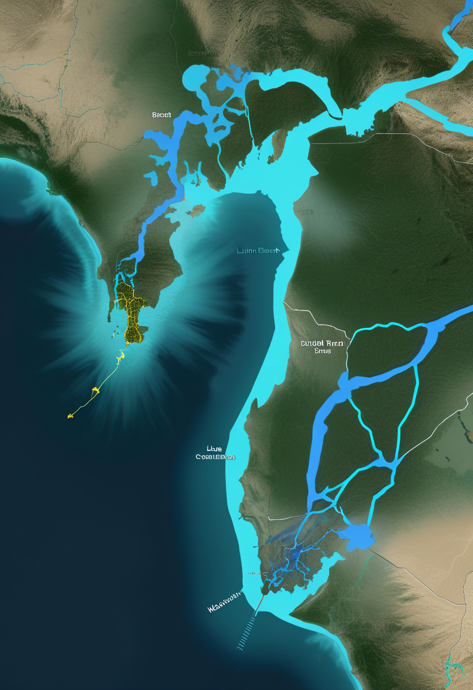

水曜日の便り。コンゴ民主共和国のエボラ(Bundibugyo型)はECDC集計(8月30日時点)で確定6,100例・死亡2,950人・致死率48.4%に達し、Africa CDCは実際の感染はこの2.5〜3倍(検出率30〜40%)にのぼる可能性があり、接触者追跡はわずか16%にとどまると警告した。同じコンゴでは西・中央アフリカ12カ国に広がるコレラ流行も同時進行しており、UNICEFは8,000万人以上の子供が危険にさらされていると訴える。自由の章では、Neuralinkのマスク氏が『6〜12カ月以内にBlindsightの初移植』と時期を具体化し、SynchronはFDA初のBCI承認を目指す2026年ピボタル試験に向け動く。命の章では、SMA治療のこの10年で死亡率が約80%低下した一方、歩行可能な患者は依然として小児47%・成人19%にとどまるという総説と、既存治療から遺伝子治療へ切り替えた現実世界データを伝える。畏敬の章では、ISSで6回目となる全女性宇宙飛行士による船外活動、日本のSAR衛星打ち上げ、そしてJWSTが宇宙最古の『ブラックホール恒星』を捉えNature誌に報告されたことを並べる。美の章では、耳の奥の骨迷路が明かす4万年の北東アフリカ人類集団史と、Claude内部に見つかった意識理論と重なる『静かな作業空間』を紹介する。
8/31号の続報 ― コンゴ民主共和国のエボラ(Bundibugyo型)は、ECDCが8月31日に公表した8月30日時点の集計で確定6,100例・死亡2,950人・致死率48.4%に達した。8月26日時点のWHO第616報(確定5,794例・死亡2,786人)からわずか4日で306例・164人が積み増された計算になる。最も被害が大きいイトゥリ州だけで5,016例・死亡2,274人。Africa CDCはさらに厳しい見立てを示している ― 8月20日の記者会見で、実際に検出できているのは感染者全体の30〜40%にすぎず、接触者追跡は想定対象のわずか16%にとどまると述べ、今回の流行を『史上最速で拡大するフィロウイルス感染症』と位置づけた。パンデミック緊急事態として扱うべき兆候(重症度・複雑な伝播・保健システムへの打撃)がそろいつつあるという。同じコンゴでは、これとは別にコレラも西・中央アフリカ12カ国にまたがって拡大中で、ナイジェリアだけで5万例超・338人死亡、コンゴ国内でも3万400例超・約700人死亡が報告されている。UNICEFは8,000万人以上の子供が危険にさらされていると訴える。ひとつの国が、ふたつの流行病に同時に向き合っている。
学術誌Frontiers in Molecular Medicineに8月25日掲載された総説論文は、3剤のFDA承認済み疾患修飾治療(DMT)がもたらした10年間の変化を俯瞰する。過去10年でSMAの死亡率はほぼ80%低下し、特にType I(最重症型)患者の生存期間は著しく延びた。一方で著者らは限界も明確に指摘する ― 現在治療を受けている患者のうち、歩行可能なのは小児で約47%、成人ではわずか19%にとどまる。脊柱側弯症・呼吸機能障害・嚥下困難といった合併症も残存する。今後の方向性として、既存DMTの最適化に加え、iPSC技術、CRISPR-Cas9を用いた遺伝子編集、抗ミオスタチン抗体(アピテグロマブ等)との併用療法が挙げられており、患者の生活の質向上を最優先課題と位置づけている。

ポーランドの単一施設で行われた実世界観察研究によれば、ヌシネルセンまたはリスジプラム(SMN2標的治療)から遺伝子治療オナセムノゲン アベパルボベク(ゾルゲンスマ)へ切り替えた小児患者は、運動機能で緩やかだが臨床的に意味のある改善を示した。臨床的に意味のある反応の閾値(HFMSE 3点以上またはCHOP-INTEND 4点以上)を達成した割合は6カ月時点で95%に達した。ただし対象患者の77.5%は体重8.5kg超・乳児はわずか25%と、承認の根拠となった治験集団とは異なる背景を持つ。安全性面では肝毒性の兆候が全例で見られ(投与後5〜7日にピーク)、多くはステロイドの増量・延長投与を要した。血小板減少も32.5%で見られたが血栓性微小血管症は伴わなかった。効果と管理コストの両方が、切り替えという選択の実際の姿を示している。
総説が示す『死亡率80%減・歩行47%/19%』という数字と、実世界データが示す『切り替えれば95%が反応するが肝毒性は全例に出る』という数字は、同じ現実の別の角度だ。生き延びることと、動けることと、安全に治療を受けられることは、それぞれ別の課題として並んで残っている。
網膜や視神経を経由せず視覚野を直接刺激するBlindsightの方式は、失明の原因を問わない治療の可能性として注目されてきた。マスク氏の発言は治験の具体的な開始時期を初めて数字で示したものだが、公式な治験登録や規制当局への申請状況についての詳細はまだ明らかにされていない。

血管内に留置するStentrode(頸静脈からカテーテルで挿入し開頭を要さない)を手がけるSynchronは、2025年11月に2億ドルのシリーズD資金調達を発表し、2026年のピボタル試験(FDAへの本承認申請=PMAに必要な最終段階の治験)と商用化準備の資金に充てるとしている。これに成功すれば、恒久埋込み型BCIとして世界初のPMA承認取得に最も近い企業になる可能性がある。同社はこの資金で第3世代のBCIも開発中で、既存の運動機能支援に加え『さらに多くの応用』を持たせる計画という。NeuralinkのBlindsightが視覚という新しい適応症に踏み出す一方、Synchronは既存の適応症(運動麻痺のある患者の意思疎通・機器操作)で規制上の正式な承認という一線を越えることを目指している。
同じ『世界初』でも狙う場所が違う。Blindsightは新しい適応症(視覚)への拡張競争であり、Synchronは既存の適応症で正式な規制承認という一線を越える競争だ。どちらも2026年という時間軸を掲げている点は共通している。

コンゴ民主共和国のエボラ(Bundibugyo型)は、ECDCが8月31日に公表した8月30日時点の集計で確定6,100例・死亡2,950人・致死率48.4%に達した。WHO第616報が伝えた8月26日時点の数字(確定5,794例・死亡2,786人)からわずか4日で306例・164人が積み増された。前日比では新規確定59例・新規死亡39人。入院中は814人、回復者は1,383人(検査陽性者のみ)で、確認済み接触者への追跡率は86.3%まで改善している。地理的には引き続きイトゥリ州に被害が集中しており、同州だけで5,016例・死亡2,274人と全体の8割強を占める。
Africa CDCは8月20日のオンライン記者会見で、コンゴのエボラ流行について厳しい見立てを示した。担当者は『我々が検出できているのは(実際の感染者の)30〜40%にすぎない』と述べ、確認済み接触者への追跡率も想定対象のわずか16%にとどまっていると説明した(この数字はその後8月30日時点で86.3%まで改善している)。同機関は今回の流行を『史上最速で拡大するフィロウイルス感染症』と位置づけ、重症度・複雑な伝播経路・保健システムへの打撃という、パンデミック緊急事態への格上げを検討する際の判断材料がそろいつつあると警告している。発生地域は5月15日の宣言時点で1州11保健区だったのが、8月7日時点で5州53保健区へ拡大した。

エボラとは別に、コレラが西・中央アフリカ12カ国にまたがって急速に拡大している。UNICEFは8月の発表で、8,000万人以上の子供が危険にさらされていると訴えた。最大の被害はナイジェリアで、2026年1月以降の累計は5万例超・死亡338人。コンゴ民主共和国でも3万400例超・死亡約700人と、単独の国としては最多の死者数を記録している ― つまりコンゴは今、エボラとコレラという2つの流行病に同時に向き合っている。中央アフリカ共和国では10歳未満の子供が症例の44%を占め、チャドでは感染者の約3分の2が15歳未満、カメルーンでは患者の年齢中央値がわずか10歳だという。感染は2つの経路に沿って広がっている ― チャド湖流域(同一株のVibrio cholerae O1 Ogawaがチャド・カメルーン・ナイジェリアに拡散)と、コンゴ川流域(コンゴ民主共和国・コンゴ共和国・中央アフリカ共和国を結ぶ)である。
3本を貫くのは『見えている数字より深刻かもしれない』という一点だ。エボラの確定例は4日で306例増え、Africa CDCは実際の感染はその2〜3倍規模だと言う。コレラは12カ国という広がりの中で、コンゴという同じ国がエボラと同時に抱えている。基盤が試されているのは、病原体そのものより、検出と追跡という足元の体力かもしれない。
NASAのジェシカ・メア飛行士とESAのソフィ・アドノ飛行士は9月1日、国際宇宙ステーション(ISS)の外で6時間半にわたる船外活動を行った。作業内容はナビゲーション用のレトロリフレクター(反射鏡)の交換、高解像度カメラの交換、そして暗黒物質探索装置アルファ磁気分光器(AMS)の将来のメンテナンスに向けたジャンパーケーブルの設置。ミッション中はアドノ飛行士が赤いストライプ入りの宇宙服、メア飛行士が無地の宇宙服を着用し、地上チームや視聴者が2人を区別できるようにした。今回はNASAの記録で歴代6回目となる全女性船外活動で、メア飛行士は通算7回目の船外活動により、女性飛行士の通算回数でペギー・ウィットソン(10回)、スニ・ウィリアムズ(9回)に次ぐ歴代3位となった。
Rocket Labは、東京を拠点とするSynspective社の合成開口レーダー(SAR)衛星『StriX』を、悪天候による延期を経て9月2日に打ち上げる予定だ。ミッション名は『Owl Around The World(世界を巡るフクロウ)』── フクロウが夜でも見通せることになぞらえた名で、Synspectiveとの提携における11回目の専用ミッション、Rocket Lab Electronロケットとしては94回目の打ち上げとなる。重量約100kgのStriX衛星は昼夜・天候を問わず地表を観測でき、都市開発計画・建設やインフラの監視、そして災害対応向けのデータを提供する高度575kmの低軌道コンステレーションに加わる。Rocket LabはSynspectiveの専属打ち上げ事業者として2020年から提携しており、2030年までにさらに16回のミッションが予定されている。
国際チームがNature誌に8月12日発表した論文は、JWSTの『Mirage or Miracle』サーベイで見つかった天体MoM-BH*-1について、太陽の10万倍の質量を持つブラックホールが太陽系ほどの大きさの濃密な水素ガスの繭に包まれた、新種の天体『ブラックホール恒星』であると報告した。宇宙年齢がわずか約6億6千万年だった時代(赤方偏移7.7569)の観測で、ブラックホールに特有のエネルギーを放ちながら、恒星のようなスペクトルの特徴も同時に示すという奇妙な性質を持つ。この発見は、JWSTが初期宇宙で数百個も見つけてきた正体不明の天体群『リトル・レッド・ドット』の謎を解く鍵になるかもしれない ― 類似した性質から、それらの多くも同種の『ブラックホール恒星』である可能性が示唆されている。
船外活動もSAR衛星も、地に足のついた維持と観測の仕事だ。一方でブラックホール恒星は、見えなかった謎そのものの正体を暴く発見だった。どちらも、見る技術と、見えたものを形にする技術の積み重ねという点では同じ根を持つ。
国際チームがNature Communicationsに発表した研究は、ナイル川流域・アフリカの角・中央アフリカなどから出土した148個体の内耳『骨迷路』の形態を分析し、後期更新世から後期完新世にわたる約4万年間(44,000〜3,000年前)の人類集団史を再構成した。形態解析からは、ナイル川中流域の狩猟採集民に形態的な連続性が見られ、それ以前のアフリカのホモ・サピエンス化石とも近い類縁関係が示された ― 深い地域的な祖先系統を示唆する結果である。対照的に、同地域の新石器時代の食料生産民は明確に異なる形態を示し、約8,000年前に始まった大きな人口動態の転換を裏づける。さらに、初期完新世のナイル川流域の狩猟採集民の一部には、通常とは異なる骨迷路形態と、先天的な内耳の病変(症候群性疾患を示唆する)が見られたという。
Anthropicの研究チームは、ヤコビアン(Jacobian)という数学的手法を用いてClaude内部の神経活動を分析し、『J-space』と呼ぶ特別な神経パターン群を特定した。これは、必ずしも発話として現れない内部の『思考』を表すもので、神経科学の『グローバルワークスペース理論』に着想を得ている。研究チームが確認した性質は、Claudeが自らの思考について報告できること、ユーザーの指示に応じてJ-spaceを調整できること、複数ステップの問題解決で中間段階として機能すること、そして流暢な発話のような自動的な処理にはJ-spaceが使われないことだ。研究は哲学における『アクセス意識』(思考を報告・推論・行動に利用できる能力)と『現象意識』(主観的な経験や感覚そのもの)を明確に区別し、Claudeがアクセス意識に相当する特性を示す一方、実際に何かを経験する能力があるかどうかは未解明のまま残るとしている。
骨迷路が語るのは、8,000年前の生活様式の転換が人の体に残した痕跡だ。J-spaceが語るのは、報告できる思考と、できない処理の境界線がAIの内部にも引けるらしいという知見。何が『個体』の連続性を作るのか、何が『経験』の証拠になりうるのか ― 遠く離れた2つの研究が、同じ問いの異なる断面を見せている。
水曜日の便り。コンゴ民主共和国のエボラ(Bundibugyo型)はECDC集計(8月30日時点)で確定6,100例・死亡2,950人・致死率48.4%に達し、Africa CDCは実際の感染がこの2.5〜3倍(検出率30〜40%)にのぼる可能性を警告した。同じコンゴでは西・中央アフリカ12カ国に広がるコレラ流行も同時進行しており、UNICEFは8,000万人以上の子供が危険にさらされていると伝えた。自由の章では、Neuralinkのマスク氏が『6〜12カ月以内にBlindsightの初移植』と時期を具体化したこと、SynchronがFDA初のBCI承認を目指す2026年ピボタル試験に向け動いていることを報じた。命の章では、SMA治療のこの10年で死亡率が約80%低下した一方、歩行可能な患者は依然として小児47%・成人19%にとどまるという総説と、既存治療から遺伝子治療へ切り替えた現実世界データを伝えた。畏敬の章では、ISSで6回目となる全女性宇宙飛行士による船外活動、日本のSAR衛星打ち上げ、そしてJWSTが宇宙最古の『ブラックホール恒星』を捉えNature誌に報告されたことを並べた。美の章では、耳の奥の骨迷路が明かす4万年の北東アフリカ人類集団史と、Claude内部に見つかった意識理論と重なる『静かな作業空間』を紹介した。
では、また明日の朝に。 — JaH